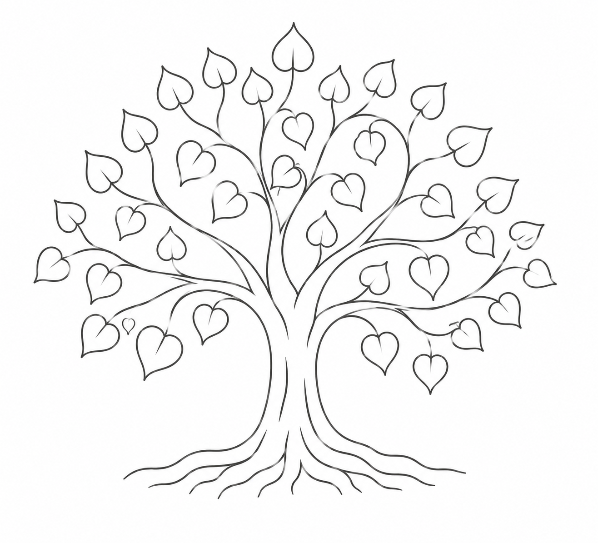
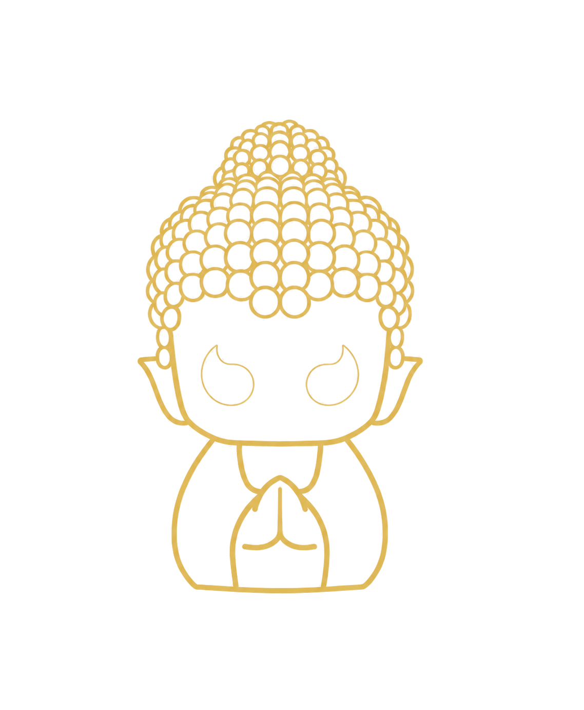

3MAGIC™ Buddha Figurines

Tap to unlock your Dharma wisdom cards
An NFC-enabled figurine that carries the Dhamma into daily practice. Tap it with your phone to unlock shareable wisdom cards, collect them in your mobile wallet, and let timeless teaching meet the rhythm of modern life.
Daily Reading
Each day, a single page of calm — a piece of gallery imagery, a curated quote, and poetry from East and West, in seven languages. Not a feed to scroll, but a moment to pause.
Our Philosophy
In an age of acceleration, we make room for stillness.
Moment of Zen is a counterweight to the AI era — not against it, but in balance with it. We craft sacred objects and curate daily beauty to invite you to pause, breathe, and ask what truly matters when so much can be automated.
© 2026 Moment of Zen · Powered by 3logic.ai